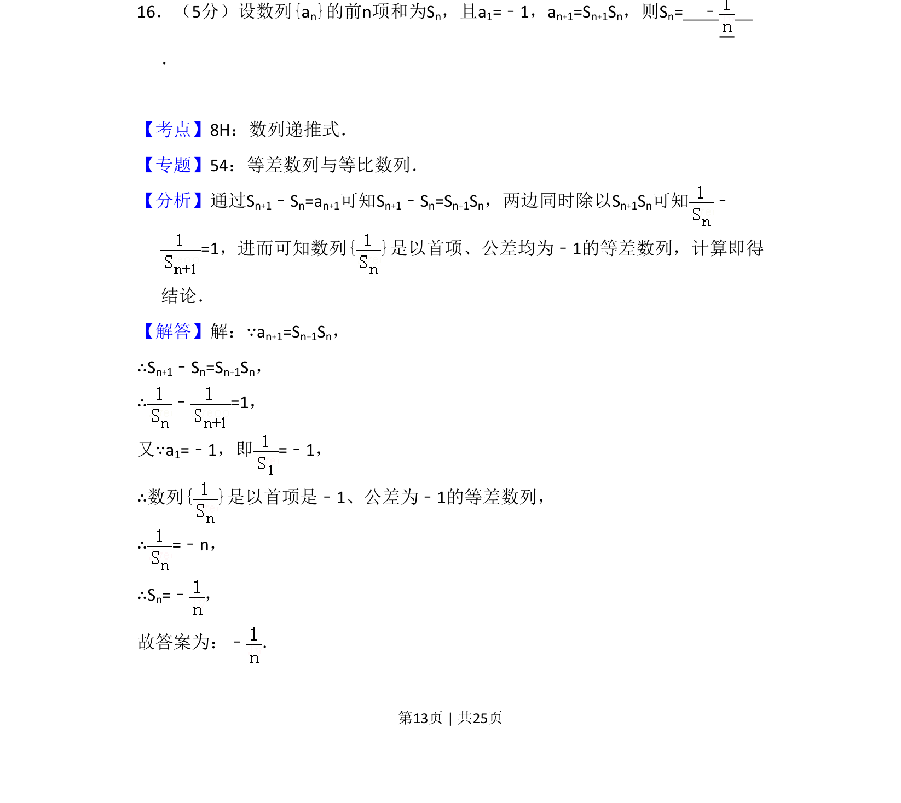
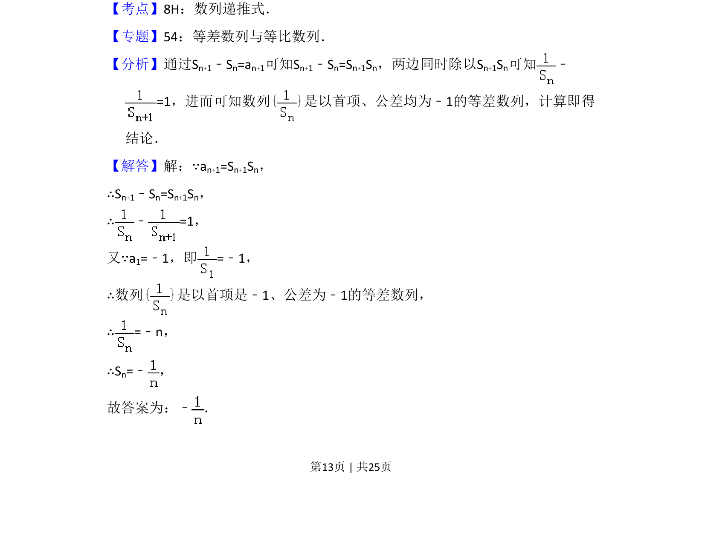
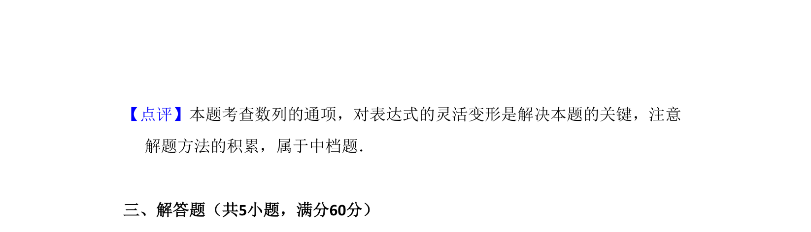

考点：数列递推式 等差数列 前n项和

本题考查由数列递推关系构造等差数列求前n项和。


📄 原 PDF 第 13 页：
素材/真题/吉林/2008-2024·（吉林）数学高考真题/2015年高考数学试卷（理）（新课标Ⅱ）（解析卷）.pdf
16．（5分）设数列{an}的前n项和为Sn，且a1=﹣1，an+1=Sn+1Sn，则Sn= ﹣ ．
【考点】8H：数列递推式．菁优网版权所有 【专题】54：等差数列与等比数列． 【分析】通过Sn+1﹣Sn=an+1可知Sn+1﹣Sn=Sn+1Sn，两边同时除以Sn+1Sn可知 ﹣ =1，进而可知数列{ }是以首项、公差均为﹣1的等差数列，计算即得 结论． 【解答】解：∵an+1=Sn+1Sn， ∴Sn+1﹣Sn=Sn+1Sn， ∴﹣=1， 又∵a1=﹣1，即=﹣1， ∴数列{ }是以首项是﹣1、公差为﹣1的等差数列， ∴=﹣n， ∴Sn=﹣ ， 故答案为：﹣ ．